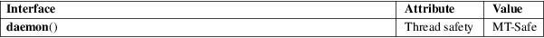

daemon − run in the background
Standard C library (libc, −lc)
#include <unistd.h>
int daemon(int nochdir, int noclose);
Feature Test Macro Requirements for glibc (see feature_test_macros(7)):
daemon():
Since glibc 2.21:
_DEFAULT_SOURCE
In glibc 2.19 and 2.20:
_DEFAULT_SOURCE || (_XOPEN_SOURCE && _XOPEN_SOURCE
< 500)
Up to and including glibc 2.19:
_BSD_SOURCE || (_XOPEN_SOURCE && _XOPEN_SOURCE <
500)
The daemon() function is for programs wishing to detach themselves from the controlling terminal and run in the background as system daemons.
If nochdir is zero, daemon() changes the process’s current working directory to the root directory ("/"); otherwise, the current working directory is left unchanged.
If noclose is zero, daemon() redirects standard input, standard output, and standard error to /dev/null; otherwise, no changes are made to these file descriptors.
(This function forks, and if the fork(2) succeeds, the parent calls _exit(2), so that further errors are seen by the child only.) On success daemon() returns zero. If an error occurs, daemon() returns −1 and sets errno to any of the errors specified for the fork(2) and setsid(2).
For an explanation of the terms used in this section, see attributes(7).

A similar function appears on the BSDs.
The glibc implementation can also return −1 when /dev/null exists but is not a character device with the expected major and minor numbers. In this case, errno need not be set.
None.
4.4BSD.
The GNU C library implementation of this function was taken from BSD, and does not employ the double-fork technique (i.e., fork(2), setsid(2), fork(2)) that is necessary to ensure that the resulting daemon process is not a session leader. Instead, the resulting daemon is a session leader. On systems that follow System V semantics (e.g., Linux), this means that if the daemon opens a terminal that is not already a controlling terminal for another session, then that terminal will inadvertently become the controlling terminal for the daemon.
fork(2), setsid(2), daemon(7), logrotate(8)